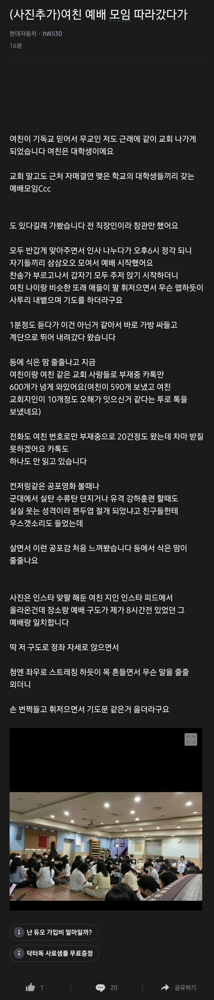

주작 글 쓰느라 고생했다. 이거에 선동 되는 애들도 고생이 많다.
교회안가봤구나
주작같은 소리하네
원래 방언이 교회사람들끼리도 어느정도 의견갈린다고 듣긴했는데 교회에 따라서 싹다 같이 방언오는 경우도 있는거같음
미안한데 난 저거 실제 직관한적 있는데?
양천구 어느 교회에 실제 저랬음 넌 저런게 없을거같냐?
너 교회다니는데 진짜 저걸 못봤음?
뭔 주작이야ㅋㅋ 금요 심야예배만 가도 통성기도 저런식으로 많이하는데ㅋㅋ 피크찍는거 보고싶으면 교회수련회가라ㅋㅋ
주작 ㅇㅈㄹ 요즘 교회마다 지들이 통성기도 더 크게 하는게 자랑이라는듯이 말하는 놈들이 널렸는데 ㅋㅋ 한국 교회가 이렇게 된 지 15년은 훌쩍 더 넘었다
교회 수련회 가봐라 주일학교 선생님이라는 으른들이 잼민이들한테도 저지랄한다
한국 기독교가 확실히 좀 특이함
기복신앙하고 기괴하게 뒤섞여서 그럼
저거 사이비 아니고 방언이라고 기독교임 근데 저거 싫어서 저런 교회 피하는 교인들도 많다더라
차라리 빵상 아주머니가 이해갈정도
사이비
놀랍게도 이단아닌곳이 저럼
군대 종교활동가도 저런애들 많음
원래 예수님도 저딴식으로 기도하지 말랬는데 그건 무시하고 자기들에게 성령이 들렸다니 하며 자기 신앙이 뛰어나다는 식을 자랑하는 용이 되어버림
통성기도가 진짜 광신의 현장이지
예전에 광화문에서 뭐였지 무슨 집회할 때 개독들이 맞대응으로 반대 집회도 했음.
내가 개독 집회 쪽으로 지나갈 때 자기들끼리 기도하고 있었는데 그 와중에도 방언 하는 인간들이 있더라.
진짜 보는 것만으로도 역한 기분이 들었음.
https://youtu.be/E5ONTXHS2mM?si=ha44-gRdTfORlX7S
추임새 넣는거며 똑같네
나도 초딩때 친구따라 교회 몇번 나갔었고,
나간 김에 열심히 믿어봐야지 하면서 기도도 진심으로 눈 꼭 감고 해보던 때가 있었는데
나랑 동갑인 다른 꼬질꼬질한 여자애는 방언 하는데 나는 안되는거임.
그래서 어떻게 하는거냐고 물어봤더니 그냥 기도만 했을 뿐인데 막 자동으로 말이 나온다는거 듣고
어린마음에 더 신기하게 느껴져서 제발 아무 조건없이 방언 한번만 하게 해주면 죽을 때 까지 맹목적으로 믿을 자신 있다 한번만 도와달라는 식으로 몇주동안 교회 나갈 때 마다 빌었는데도 아무리 집중하고 집중해도 안되는거임.
그래서 그 다음부터는 그냥 포기하고 헌금 할 돈으로 나가서 핫도그나 사먹고 하면서 재밌게 놀았음.
굴! 굴굴! 팍팍!
개웃기네
그런 얘기가 있음. 긴 나무의자가 있으면 그나마 가도되는 교회, 맨바닥에 방석 깔려있으면 피해야하는 교회라고
ㅋㅋㅋㅋ 뭔느낌인지 알겠다
아냐 저런 의자있는 교회서도 저 지랄 한 지 한참됨. 롱의자라고 못할거 같음? 일어서서 저런다
약간 무당 신선같은 도교가 섞인거임?
트렌스상태같은거일거같음 러너스하이나 명상하다가 뭔가 상태가 달라지거나 오르가즘처럼. 근데 뭔가 100% 자연스러운건 아닌거같기도 하고 진짜 뭔지는 모르겠음
무서워ㅠㄹㅇ 사이비가틈
저거뿐만아니라 갑자기 쳐움 엉엉 하다가 일순간에 원래대로 돌아오고. 무슨 단체 사이코드라마같은거인줄
한 번이라도 따라한 뒤로는 내가 그런 병신같은 짓을 했다는 것을 인정할 수 없기 때문에 아 뭔가 있구나 자기최면 걸기 시작하고 점점 빠져드는 거임
저런 교회는 무속이랑 똑같음
저거 우리나라에서는 순복음교회 영향받은 곳에서 주로 한다
다른 대부분의 장로교 교파에서는 저런 방언기도는 혼자 기도할 때만 하라고 권고하고
특히 통역해주는 사람이 없으면 사람들 모인 자리에서 함부로 하지 말라고 자제시키기도 함
솔직히 남의 종교생활이니깐 대놓고 뭐라 하진 않는데 저 방언지랄은 구라핑 맞는 거 같음
저거 존나무서움 귀신들린거같음 처음보면ㅋㅋㅋ
뭐 나도 교회를 여러군데 다닌건 아니니 일반적이라고 말할 지식은 없지만
공식적인 예배나 그런 모임에서 기도할때는
방언으로 기도하는건 하지말라는 분위기임
개인적으로 기도할때 하는거야 좋지만
방언을 모든사람이 하는것도 아닌데
통성기도할때 옆자리에서 솰라솰라 해대는건 위화감이 쩔거든
물론 한국어로 해도 다같이 통성기도하는건
비신자입장에선 공포영화로 보이겠다 싶긴한데ㅋㅋ
방언은 진짜 무속신 신들려서 하는 소리처럼들리니
괴리감이 너무 큼ㅋㅋ
방언이 다른나라 언어로 하는거라고 하긴 하는데
그건 솔직히 아닌거같고
(아프리카 어디가의 소수민족 언어쯤 하려나 싶은데, 메이저 국가의 방언은 전설 수준이라)
방언기도 자체가 잘못된건 아니라고 생각은함.
개인적인 기도에서는 내가 언어로 미처 표현하지 못하는것들을 풀어놓는 느낌으로 시원하게 뱉을수 있거든. 그걸 다같이 있는자리에서 하는건 좀 별개의 문제라 생각해.
장로나 감리는 덜 한 느낌인데 성결교 계열이 뭔가 저런 느낌이 쌘거같음
걍 누구 한명이 방언기도 하면 하나님이랑 소통하는 줄 알고 너도 하는데 나도 할 수 있어!하고 한두명씩 따라하다가 집단이 다 같이 미쳐가는 상황 ㅋㅋㅋㅋ
와...나도 친구따라 갔다가 저거 보고 기겁했음
시끄러운 음악소리로 사람 홀리게 하는거
교회, 무속, 클럽
원리 다 비슷함
존나미개하다 참..
태고의 달인 오프라인 정모 ㄷㄷㄷ
종교 멸종의 날이 인류 진화의 날이다
저게 약간 사나이 테스트 같던데
이 쪽팔림을 감수하면 너도 임마 우리 식구되는거야
약간 댄스타임에 야 너 함 보여줘봐 아왜
빼지말고 한번 보여줘봐
거기서 에이시발 모르겠다 막춤이라도 한번추면
신고식 마치고 식구되는거지
한번 춰봤으니 다음에도 비슷한 느낌으로 가는거고
신입 들어오면
야 임마 나도 그냥 눈딱감고 흔들어 재꼈어
별거아냐~ 한번 보여줘봐~ 하고 꺼드럭 대는거지
존나병신같네ㅋㅋ실제병신도 저렇게행동안할듯ㅋㅋㅋ
통성기도 좆같아가지고 나올 타이밍 될 때마다 유튜브로 이슬람 예배 소리 틀고 있음 ㅋㅋㅋㅋ
저거 존나 기괴함. 방언이라는 개소리 하고 저걸 해석하는 사람도 있다는데 그냥 웃김 ㅋㅋ.
마태복음 중
또 너희가 기도할 때에 외식하는 자와 같이 되지 말라. 저희는 사람에게 보이려고 회당과 큰 거리 어귀에 서서 기도하기를 좋아하느니라.내가 진실로 너희에게 이르노니 저희는 자기 상을 이미 받았느니라
너는 기도할 때에 네 골방에 들어가 문을 닫고 은밀한 중에 계신 네 아버지께 기도하라 은밀한 중에 보시는 네 아버지께서 갚으시리라. 또 기도할 때에 이방인과 같이 중언부언하지 말라.저희는 말을 많이 하여야 들으실줄 생각하느니라.
= 성경에서 남들에게 보여주기 위해 기도하지 말아라, 방언같은 개ㅈㄹ하지 말아라 했는데 지들 편한대로 취사선택해서 받아들임
어릴 때 봐왔지만 너무 기괴함ㅋㅋㅋㅋㅋ
아무리 생각해도 이해가 안되기는 해
오